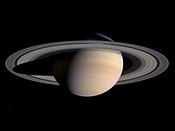

Сатурн
 Сатурн е шестата планета от
Слънчевата система.
Тя е газов гигант и е втора по големина в Слънчевата система след Юпитер. Сатурн е известен най-вече с
пръстените си, съставени от
лед и космически прах. Сатурн носи името на римския бог на посевите и на земеделието Сатурн, съответствие на
титана Кронос в древногръцката митология. Символът на планетата е стилизирано изображение на сърп (♄).
Сатурн е съставен от водород,
хелий и следи от други елементи. Вътрешността на планетата е съставена от малко ядро от скали и лед,
оградено от тънък слой метален водород, който е ограден от дебел външен слой газове. Скоростта на вятъра на
Сатурн може да достигне до 1 800 km/h, много по-бързо от ветровете на Юпитер. Планетата има магнитно поле
със средна сила между това на Земята и много по-силното магнитно поле около Юпитер.
Сатурн притежава голяма система от планетни пръстени, съставени най-вече от лед, примесен с малки частици
космически прах. Открити са шестдесет естествени спътника около планетата. Титан, най-големият около Сатурн
и втори в Слънчевата система (след Ганимед около Юпитер), е по-голям от планета Меркурий и единственият
естествен спътник в Слънчевата система, притежаващ значителна атмосфера. През януари 2005 г. космически
модул достигна до повърхността на Титан, която има консистенция на мокър пясък.
Сатурн е шестата планета от
Слънчевата система.
Тя е газов гигант и е втора по големина в Слънчевата система след Юпитер. Сатурн е известен най-вече с
пръстените си, съставени от
лед и космически прах. Сатурн носи името на римския бог на посевите и на земеделието Сатурн, съответствие на
титана Кронос в древногръцката митология. Символът на планетата е стилизирано изображение на сърп (♄).
Сатурн е съставен от водород,
хелий и следи от други елементи. Вътрешността на планетата е съставена от малко ядро от скали и лед,
оградено от тънък слой метален водород, който е ограден от дебел външен слой газове. Скоростта на вятъра на
Сатурн може да достигне до 1 800 km/h, много по-бързо от ветровете на Юпитер. Планетата има магнитно поле
със средна сила между това на Земята и много по-силното магнитно поле около Юпитер.
Сатурн притежава голяма система от планетни пръстени, съставени най-вече от лед, примесен с малки частици
космически прах. Открити са шестдесет естествени спътника около планетата. Титан, най-големият около Сатурн
и втори в Слънчевата система (след Ганимед около Юпитер), е по-голям от планета Меркурий и единственият
естествен спътник в Слънчевата система, притежаващ значителна атмосфера. През януари 2005 г. космически
модул достигна до повърхността на Титан, която има консистенция на мокър пясък.
Физични характеристики
За сфероидната форма на Сатурн са характерни силното „сплесване“ в областта на полюсите и „издуване“ в зоната на екватора. Разликата между неговия екваториален (120 536 km) и полярен (108 728 km) диаметър е почти 10%. Причина за това е бързото въртене и течното състояние на планетата. Сатурн е единствената планета в Слънчевата система, която е с по-малка плътност от водата — 0,69 g/cm3. Ядрото на планетата обаче е значително по-плътно от леката атмосфера. Сатурн е равен само на 95 земни маси, сравнено с Юпитер, който тежи 318 пъти по масата на Земята, но е само 20% по-голям от Сатурн.
Състав
Вътрешността на Сатурн е подобна на тази на Юпитер – скално ядро в центъра, покрито със слоеве (отвътре навън) от метализиран водород и молекулярен водород. Има следи от водни и амонячни кристали, както и от метан, етан и др. Общата маса на тези елементи се изчислява на около 19 до 31 пъти по-голяма от тази на Земята, с най-голяма концентрация в ядрото. Температурата във вътрешността достига до 12 000 K; планетата излъчва 2,6 пъти повече топлина, отколкото получава от Слънцето, което е признак за високата температура на ядрото. Смята се, че основният метод за получаване на тази топлина е по механизма на Келвин-Хелмхолц (бавно сгъстяване под действието на гравитацията). Част от топлината може би се получава във вътрешността при „утаяването“ на хелия в предимно водородната среда(хелият е по-тежък от водорода) и отделената енергия вследствие на триенето между атомите.
Атмосфера
За атмосферата на Сатурн са характерни облачни пояси, подобни на тези на Юпитер, но много по-бледи и
по-широки в областта на екватора. Облачните пояси на Сатурн за първи път са изследвани от апаратите
Вояджър. Впоследствие обаче увеличението в разделителната способност на земните телескопи (виж също
телескопа Хъбъл) позволява тези пояси да се наблюдават и от Земята.
За атмосферата на Сатурн са характерни бури и турбуленции, подобни на тези на Юпитер. През 1990 г.
телескопът Хъбъл наблюдава голям бял облак близо до екватора на планетата, който не е бил забелязан при
наблюденията, извършени от апаратите Вояджър.
През 1994 г. е наблюдавана още една по-малка буря. При наблюдения в инфрачервения диапазон е открит полярният вихър (вид турбуленция), за който е характерно, че е значително по-топъл от заобикалящата го атмосфера и е единствен по рода си в Слънчевата система. Докато температурата на Сатурн обикновено е около -185 °C, температурата на вихъра е около -122 °C. Голяма шестоъгълна вълна, която се насочва към полярната вихрушка, е забелязана първо на снимките, направени от Вояджър. През ноември 2006 г. НАСА обявява, че космическият апарат Касини е наблюдавал ураганна буря на южния полюс, която има ясно видимо око. Тези наблюдения са важни, защото освен на Земята не са наблюдавани на друга планета облаци във формата на око на циклон (включително и провалилото се наблюдение на Голямото червено петно на Юпитер от космическия апарат Галилео).
Магнитно поле и магнитосфера
Сатурн има магнитно поле с проста сферична форма на магнитен дипол. Силата му е 0,2 Гауса (20 µT) на екватора, което е около 1/20 от магнитното поле около Юпитер и малко по-слабо от това на Земята. В резултат магнитосферата му е много по-малка от Юпитеровата и се простира малко отвъд орбитата на Титан. Най-вероятно магнитното поле се създава от метализирания водороден слой (наречен метализирано водородно динамо), подобно на магнитното поле при Юпитер. Както при другите планети и магнитосферата на Сатурн може да отклонява частиците, идващи от слънчевия вятър. Спътникът Титан обикаля във външната част на магнитосферата и тя взаимодейства с йонизирани частици от атмосферата на естествения спътник.
Пръстените на Сатурн
Най-голямата забележителност на Сатурн вероятно са неговите пръстени – сами по себе си уникален обект в Слънчевата система.
Исторически наблюдения
Пръстените на Сатурн за първи път са били забелязани от Галилео Галилей през 1610 г., но първоначално той погрешно смятал, че те са големи спътници в близост до планетата. В писмото до своя благодетел, херцогът на Тоскана, Галилей пише: „Сатурн не е сам, а е съставен от три части, които почти се докосват и не се движат или изменят една спрямо друга. Подредени са на една права, успоредна на зодиака, средната част е Сатурн, който е около три пъти по-голям от страничните части“. Галилео също е описал Сатурн като имащ „уши“. През 1612 г. Земята пресича равнината на пръстените, вследствие на което те стават невидими и през 1613 г., след като Земята се отдалечава от равнината им, те отново стават наблюдаеми. Това явление обърква допълнително Галилео, който смятал пръстените на Сатурн за „дръжки“, стърчащи от двете страни на диска на планетата. През 1655 г. Кристиян Хюйгенс наблюдава и правилно описва пръстените, използвайки много по-мощен телескоп от този на Галилей. През 1675 г. Джовани Доменико Касини открива, че пръстените се състоят от множество тесни пръстени с пролуки между тях. Най-голямата пролука в пръстените носи неговото име — деление на Касини. През 1859 г. Джеймс Кларк Максуел доказва, че пръстените не могат да бъдат твърди, защото биха се „счупСравнение между снимките, направени от Касини-Хюйгенс (октомври 2004 г.), Пионер 11 (1979 г.) и телескопа Хъбъл или“. Той предполага, че пръстените са съставени от множество частици, които обикалят около планетата. През 1895 г. теорията му е потвърдена в обсерваторията Лик.
Обратната страна на пръстените
Сравнение между снимките, направени от Касини-Хюйгенс (октомври 2004 г.), Пионер 11 (1979 г.) и телескопа Хъбъл.
 Снимка направена от Касини-Хюйгенс: 27 март, 2004 г. на която пръстените са осветени фронтално. Забележете сянката на Сатурн върху пръстените и сянката на пръстените върху планетата. Най-широкия пръстен Б е и най-яркия.
Снимка направена от Пионер 11: 11 септември, 1979 г. на неосветената част от пръстените. Най-широките им части са почти невидими.
Снимка направена от Касини-Хюйгенс: 27 октомври, 2004 г. на неосветената част от пръстените. Широкият пръстен Б изглежда най-тъмен от този ъгъл.
 Снимка на осветената част на пръстените от земна орбита направена от телескопа Хъбъл през октомври
1996 г.
Снимка на осветената част на пръстените от земна орбита направена от телескопа Хъбъл през октомври
1996 г.
Осветената страна на пръстените изглежда различна от неосветената, която е тъмна и пръстен Б е почти черен. Наблюдение на неосветената част от пръстените (подобно на обратната страна на Луната) е възможно само от космически апарати и през 2004 г. апаратът Касини-Хюйгенс ги засне за първи път от 25 години.
"Спиците" на пръстените
Преди 1980 г. се смяташе, че структурата на пръстените на Сатурн е диктувана изцяло от гравитацията. По време на мисиите на апаратите Вояджър бяха наблюдавани тъмни радиални линии по пръстен Б, впоследстие наречени „спици“, чието продължително съществуване и въртене като едно цяло не може да се обясни от орбиталната механика. Предполага се, че те са последица от електромагнитни взаимодействия, тъй като се въртят в почти пълен синхрон с магнитосферата на Сатурн. Точният механизъм на тяхното образуване обаче все още е неизвестен. Към февруари 2005 г. апаратът Касини-Хюйгенс все още не е открил спици в пръстените, въпреки че е оборудван с по-добри камери от тези на Вояджър. Възможно е те да изчезват и да се появяват в зависимост от сезоните на планетата. Някои учени смятат, че те няма да се появят отново преди 2007 г. Въпреки това екипът, изследващ снимките от Касини, продължава да следи за спици в пръстените и те се появяват отново на изображенията, изпратени от апарата на 5 септември 2005 г.
Спътниците на Сатурн
Сатурн има голям брой естествени спътници (60 известни, изключвайки огромния брой тела, съставящи пръстените), 52 от които са именувани. Някои от спътниците са много малки: 34 са по-малки от 10 km в диаметър, а други 13 по-малки от 50 km в диаметър. Освен това има 3 небесни тела, за които се предполага, че може да са спътници, но може и да са просто големи образувания от прах в пръстените на планетата. Най-големият спътник е Титан — единственият спътник в Слънчевата система, за който със сигурност се знае, че има гъста атмосфера. В сравнение с останалите спътници на Сатурн, Титан е огромен. След Слънцето, осемте планети и Юпитеровия спътник Ганимед, Титан е най-масивният обект в Слънчевата система. Титан съдържа около 90% от масата на материята около Сатурн и пръстените му. Вторият по големина спътник на планетата е Рея, за която се предполага, че има разредена система от пръстени. Повечето от спътниците на Сатурн са наименувани на Титаните от гръцката митология.